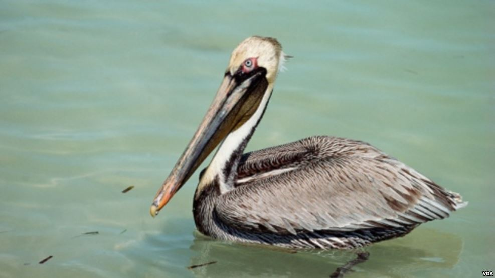
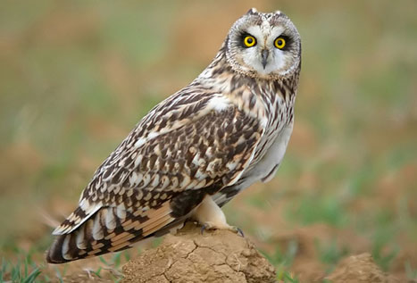

Cotorra Frente Azul
Mide entre 35 y 38 cm, llegando a pesar entre 350 y 450 g. Plumaje color verde, frente y bridas azuladas, garganta, mejilla y capirote amarillos.
Animales vertebrados de sangre caliente que caminan, saltan o se mantienen solo sobre sus extremidades posteriores.
Mide entre 35 y 38 cm, llegando a pesar entre 350 y 450 g. Plumaje color verde, frente y bridas azuladas, garganta, mejilla y capirote amarillos.

El macho reproductor tiene la cabeza y cuello con un lavado amarillento en la coronilla, y la nuca y parte trasera de la cabeza son marrón rojizo, aunque a veces la nuca permanece blanca.

Se encuentran distribuidas en la parte oriental de la isla. Prefieren áreas abiertas, donde hay siembra de caña, ciénaga, vegas con charcos de agua y pocos árboles.
Loros tropicales en 4K con sonidos de la naturaleza, sin copyright.
Gira los modelos con el dedo o el mouse. En tu celular, tócalos para colocarlos en tu espacio con realidad aumentada.
Animado y listo para volar contigo
El ícono de nuestras costas
Modelos "Parrot" y "Flamingo" por mirada.com, vía los ejemplos de three.js